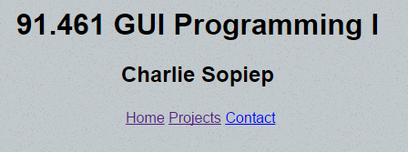
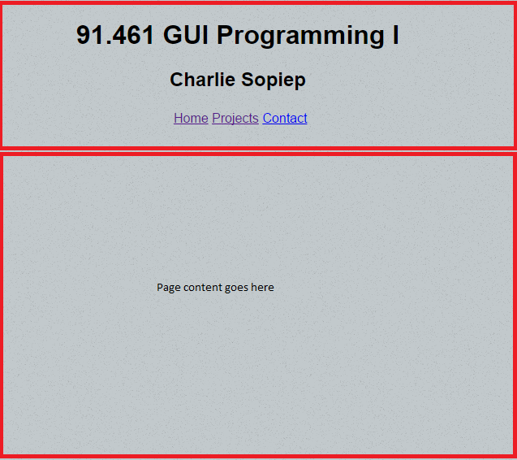

Below is my current home page. I basically took my original home page and split it up in order to make it look nicer.
However I intended for the top half to be some sort of navigation bar while the bottom half outputs the page contents so the user doesn't have to click so much.
Unfortunately I couldn't figure out how to go about doing this so I left it like that. Might look into using JSFiddle to rectify that problem. Links still work but you need to click more to navigate my site.